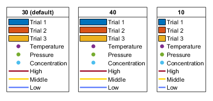

What's new in MATLAB R2024b
In this post, I will present several updates which has been made in MATLAB R2024b. For a detailed list of changes in MATLAB, please refer to this page.
Open documentation in system browser
The doc function, which displays the documentation, will now show the documentation in the system web browser instead of the help browser. The help browser will be removed.
Determine approximate equality
One can now use isapprox(A,B) to determine whether A and B are approximately equal.
For example, sin(3/4*pi) and 1/sqrt(2) are the same in theory. However, due to rounding errors, the expression sin(3/4*pi)==1/sqrt(2) will return 0. In contrast, isapprox will take the rounding errors in to account. A and B will be treated as "the same" if the difference satisfies
where AbsTol and RelTol are set to 1e-15 if A and B are of type double, and 5e-7 if A or B is of type single. As a result, the expression isapprox(sin(3/4*pi),1/sqrt(2)) will return 1.
One can also specify AbsTol and RelTol. For example,
>> isapprox(A,B,RelativeTolerance=1e-14,AbsoluteTolerance=1e-14)
will set RelTol and AbsTol both to 1e-14. If only one of the tolerance is specified, then the other one will automatically set to zero.
Specify Tikhonov regularization factor
The function lsqminnorm(A,B) returns an array \(X\) that solves the linear system \(AX = B\) and minimize the values of \(\|AX - B\|_2\). One can now specify the Tikhonov regularization factor alpha by
lsqminnorm(A,B,RegularizationFactor=alpha)
which will minimize the norm
\[\|AX-B\|_2^2 + {\tt alpha}^2 \|X\|_2^{2}. \]This is useful when the coefficient matrix A is very ill-conditioned.
Control the width of icons in legend
A new layout parameter IconColumnWidth has been added into MATLAB. One can now control the width of the legend icon by assigning a positive number to IconColumnWidth in point units, where 1 point is 1/72 inch. The following image shows the same legend but with different IconColumnWidth values.

References
-
Golub, G. H., Hansen, P. C., & O'Leary, D. P. (1999). Tikhonov regularization and total least squares. SIAM J. Matrix Anal. Appl., 21(1), 185-194.
-
Figure for different
IconColumnWidthis taken from here.